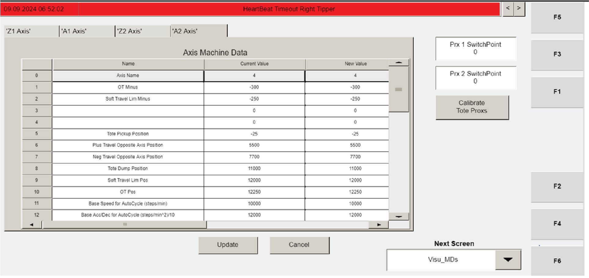

| Procedure ID | proc_set_a_axis_home_offset_values_on_the_visu_mds_screen_v1 |
|---|---|
| Title | Set A-axis home offset values on the Visu_MDs screen |
| Procedure Type | operation |
| Primary Role | L2_support |
| Support Safe | Yes |
| Validation Status | needs_sme_review |
| Merge Status | source_finalized |
This commissioning procedure updates the A-axis Home Offset setting by navigating to the Visu_MDs screen, entering the previously recorded value into the New Value column for each A-axis, and pressing UPDATE to confirm the change.
Use during tipper commissioning when the previously recorded Home Offset value for each A-axis must be entered on the Visu_MDs screen.
Responsible role: L2_support
Instruction:
Navigate to the "Visu_MDs" screen using F2.
Expected result:
The Visu_MDs screen is displayed and ready for parameter entry.
Screens / Images:

Stop or Escalate If:
Responsible role: L2_support
Instruction:
For an A-axis, locate the "Home Offset" setting and enter the value recorded in the previous procedure into the "New Value" column.
Expected result:
The recorded Home Offset value is entered in the New Value column for the selected A-axis.
Screens / Images:
Stop or Escalate If:
Responsible role: L2_support
Instruction:
Press UPDATE to confirm the change.
Expected result:
The entered Home Offset value is confirmed on the Visu_MDs screen.
Screens / Images:
Stop or Escalate If:
Responsible role: L2_support
Instruction:
Repeat the entry and update for the other A-axis if needed.
Expected result:
Each applicable A-axis has its previously recorded Home Offset value entered and confirmed.
Screens / Images:
Stop or Escalate If: